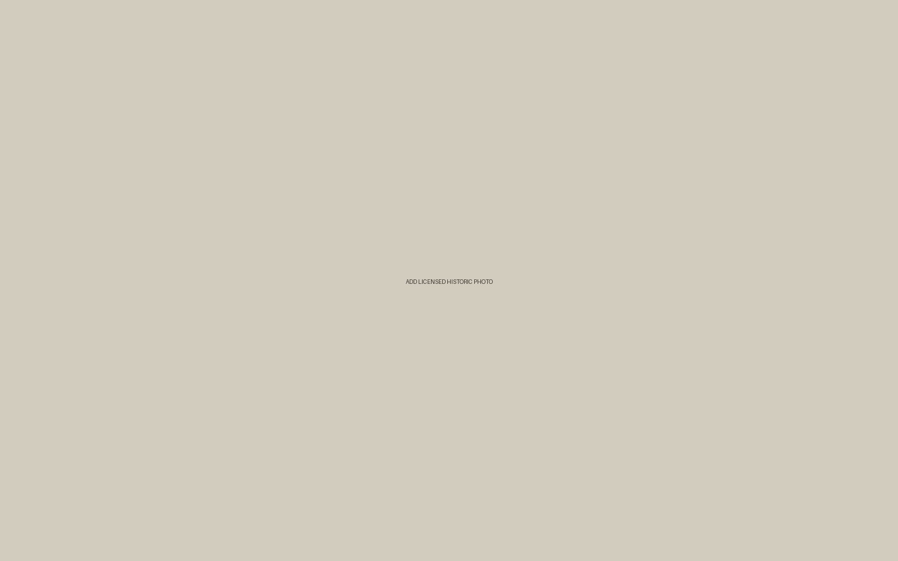

Hastings Heritage
Artist banner
templates
A simple starting point for telling the story behind each winning design.
Start here
Copy the landmark page folder, replace the bracketed fields, and add the artist’s story before adding the landmark context at the bottom.
Name
Artist profile
Age
Name, age and group
Group
Banner story
Winning work
Landmark context
Template page
Keep the person at the centre.
The reusable page is organised in the same order visitors experience it: the winning artist first, the banner story second, and the landmark information last.
Use the shared stylesheet for every page so the whole collection keeps a consistent visual language.
Current template
Open the artist banner template
The page includes editable prompts for the artist profile, winning work, landmark information and position relative to the Norman Trail.
Location
[Street, area or landmark reference]
Trail position
[Where it sits relative to the Norman Trail]

Sources & credits
See README.txt for the folder structure and the steps for creating a new page.